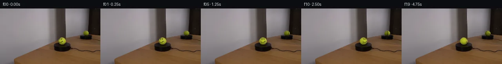

![首帧]()

Round 00
2026-11-05T12:35:00.131766+00:00像素候选变化代码 +189/−0inspection 更新
pixels 91e6005b9b1ee3e7 · code b6e136876847c31e
查看本轮 generate.py 真实 diff
--- previous/generate.py
+++ current/generate.py
@@ -0,0 +1,189 @@
+"""PixelWorld continuation using only local RGB pixels and analytic sphere mapping.
+
+No image viewer, external renderer, model, network, or reference is used.
+"""
+from pathlib import Path
+import json
+import numpy as np
+from PIL import Image, ImageDraw
+from scipy.ndimage import map_coordinates
+from artifact_io import save
+
+ROOT = Path(__file__).resolve().parent
+SOURCE = np.array(Image.open(ROOT / 'first_frame.png').convert('RGB'))
+H, W = SOURCE.shape[:2]
+Y, X = np.mgrid[:H, :W]
+
+
+def features(nx, ny, nz, simple=False):
+ if simple:
+ return np.stack([np.ones_like(nx), nx, ny, nz, nx * ny, ny * ny], -1)
+ return np.stack([np.ones_like(nx), nx, ny, nz, nx * nx, ny * ny,
+ nx * ny, nx * nz, ny * nz], -1)
+
+
+def sample(array, sx, sy):
+ if array.ndim == 2:
+ return map_coordinates(array, [sy, sx], order=1, mode='nearest')
+ return np.stack([map_coordinates(array[..., c], [sy, sx], order=1,
+ mode='nearest') for c in range(array.shape[-1])], -1)
+
+
+class BallView:
+ def __init__(self, cx, cy, rx, ry, longitude, mirrored=False):
+ self.cx, self.cy, self.rx, self.ry = cx, cy, rx, ry
+ self.longitude = np.deg2rad(longitude)
+ self.parity = -1 if mirrored else 1
+ self.nx = (X - cx) / rx
+ self.ny = (cy - Y) / ry
+ self.q = self.nx**2 + self.ny**2
+ self.nz = np.sqrt(np.maximum(0., 1. - self.q))
+ self.region = self.q < .985
+ f = features(self.nx, self.ny, self.nz, simple=mirrored)
+ rgb = SOURCE.astype(float)
+ if mirrored:
+ # The reflected ball has no ink. Its lower felt is naturally dark.
+ selection = (self.q < .83) & (rgb[..., 2] < 44) & (rgb[..., 1] > 45)
+ else:
+ # Exclude dark ink and the pale seam from the fixed lighting fit.
+ selection = ((self.q < .83) & (rgb[..., 2] < 52) &
+ (rgb[..., 1] > 90) & (rgb[..., 1] > rgb[..., 0] * 1.015))
+ coefficients = np.linalg.lstsq(f[selection], rgb[selection], rcond=None)[0]
+ for _ in range(6):
+ residual = rgb - f @ coefficients
+ weight = np.exp(-.5 * (residual[..., 1] / 8.)**2)
+ sw = np.sqrt(np.maximum(weight[selection], .00001))[:, None]
+ coefficients = np.linalg.lstsq(f[selection] * sw,
+ rgb[selection] * sw, rcond=None)[0]
+ self.base = np.clip(f @ coefficients, [50, 53, 8] if mirrored else [80, 85, 20],
+ [170, 180, 60] if mirrored else [200, 207, 60])
+ self.residual = np.clip(rgb / self.base - 1., -.88, 3.)
+ self.residual[~self.region] = 0
+ # Suppress contaminated silhouette samples when looking into either source.
+ self.trust = np.clip((.985 - self.q) / .12, 0, 1)
+ self.trust[~self.region] = 0
+ self.latitude = np.arcsin(np.clip(self.ny, -1, 1))
+ self.local_lon = np.arctan2(self.parity * self.nx, self.nz)
+ self.world_lon = self.longitude + self.local_lon
+
+ def read_material(self, longitude, latitude):
+ relative = (longitude - self.longitude + np.pi) % (2 * np.pi) - np.pi
+ c = np.cos(latitude)
+ nx = self.parity * c * np.sin(relative)
+ ny = np.sin(latitude)
+ sx, sy = self.cx + self.rx * nx, self.cy - self.ry * ny
+ visible = np.cos(relative) > 0
+ trust = sample(self.trust, sx, sy)
+ normal_z = np.maximum(0, c * np.cos(relative))
+ weight = visible * trust * normal_z**3
+ return sample(self.residual, sx, sy), weight
+
+
+PRIMARY = BallView(158.3, 84.1, 9.6, 9.6, 0)
+MIRROR = BallView(219.4, 64.0, 7.4, 6.8, 135, mirrored=True)
+VIEWS = [PRIMARY, MIRROR]
+
+
+def material(longitude, latitude):
… diff truncated; 102 more lines …